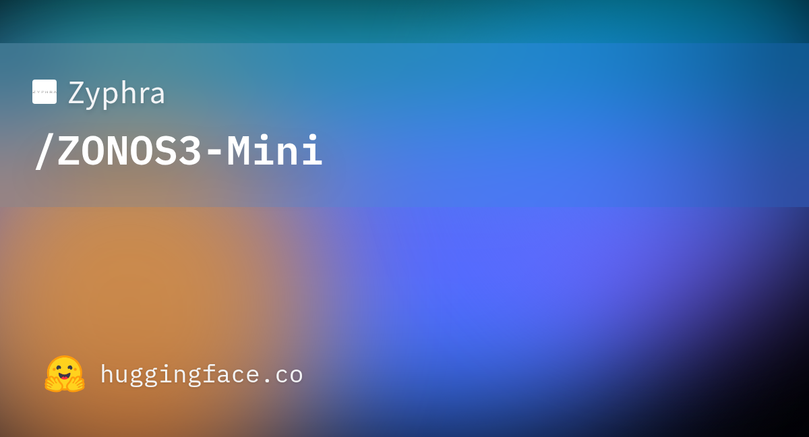

9 ноября Zyphra (та самая, что выкатила в своё время Zonos-v0.1) опубликовала ZONOS3-Mini — компактную модель синтеза речи с клонированием голоса. Архитектура — разреженная смесь экспертов: 100 млн активных параметров на токен при 800 млн полных; обучение заняло 2,5 дня на 112 H100. Веса, код и веб-рантайм открыты под Apache 2.0, чекпойнты лежат на Hugging Face в форматах Safetensors и GGUF, есть готовые квантования.
Заявлено 43 языка, и русский честно в списке (регион «Центральная и Восточная Европа»: польский, чешский, словацкий, венгерский, румынский, болгарский, русский, украинский). Полная таблица — в карточке модели: от португальского и иврита до десяти языков Индии, включая одия и панджаби. 27 встроенных голосов сгруппированы по языкам.
WebGPU-сборка исполняется целиком на локальной видеокарте: открываешь студию или Lite-версию, записываешь или загружаешь клип — и говоришь чужим голосом, без сервера и без установки чего-либо. Первая загрузка качает модель, дальше браузер держит её в кэше. Для продакшена — нативные рантаймы, SGLang за OpenAI-совместимым эндпоинтом /v1/audio/speech со стримингом 44,1 кГц, хостинг через Zyphra Cloud.
Заявлено моделирование возраста спикера, акцента, тембральной окраски и эмоции вплоть до управления отдельными словами — плюс клонирование по короткому сэмплу без расшифровки (zero-shot). В сравнительной таблице Zyphra ставит модель против Fish Audio S2 Pro, MOSS-TTS v1.5 и Qwen3-TTS 1.7B на бенчмарке ZTTS2-Eval — но это замеры самой Zyphra, независимого репро на сегодня нет.
Клон голоса в реальном времени на телефоне без сервера означает: атаки voice-phishing с живым клоком перестают требовать облака и денег. Злоумышленнику больше не нужен платный сервис — достаточно вкладки браузера с WebGPU. Это конкретный аргумент вводить кодовые фразы между вами и вашими близкими/коллегами. Уже сегодня.